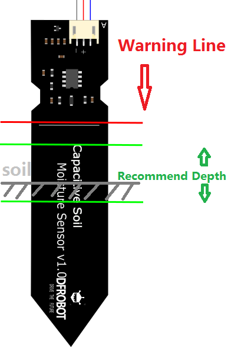

<!doctype html><meta charset="utf-8"><style>@font-face{font-family:Pretendard;src:url('/assets/Pretendard-Regular.ttf')}*{box-sizing:border-box}body{margin:0;font-family:Pretendard}.canvas{position:relative;background:white;width:1200px;height:760px}table{position:absolute;left:535px;top:80px;width:625px;border-collapse:collapse;font-size:34px}td,th{padding:24px 12px;border-bottom:2px solid #ccc;text-align:left}th{background:#DFEAFF}h1{position:absolute;left:535px;top:5px;font-size:32px;color:#315DAB}.note{position:absolute;left:535px;top:450px;font-size:32px;line-height:1.7}.credit{position:absolute;left:25px;bottom:15px;font-size:16px}</style><main class="canvas"><h1>UNO R3 · SEN0193 연결표</h1><table><tr><th>센서 선</th><th>UNO</th></tr><tr><td>빨강 VCC</td><td>5V</td></tr><tr><td>검정 GND</td><td>GND</td></tr><tr><td>노랑 Signal</td><td>A0</td></tr></table><div class="note">빨간 선: 상단을 젖히지 않는 한계<br>초록 범위: 권장 삽입 깊이 안내<br>회색 부분: 흙의 표면 예시<br>흙 속 프로브만 같은 깊이로 비교</div><div class="credit">삽입 한계 원본: DFRobot · 크기 조절/한국어 안내 추가 · 별도 자유 이용 라이선스 미확인</div></main>